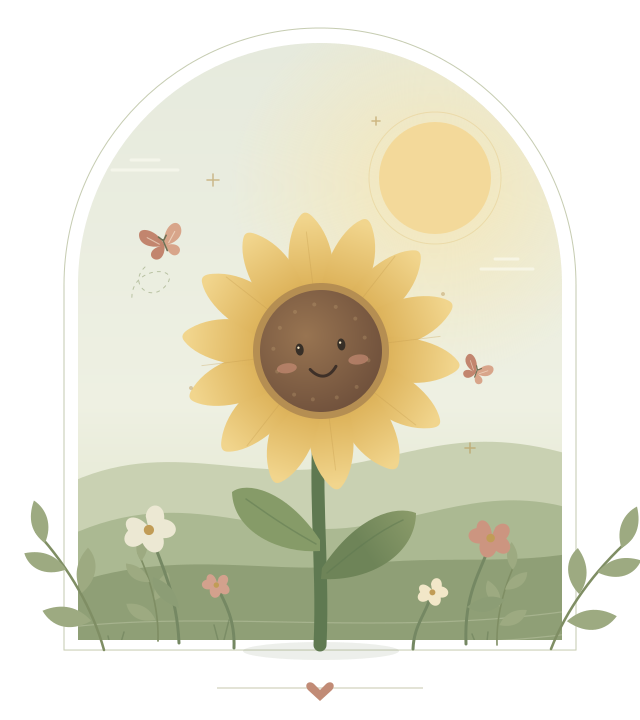
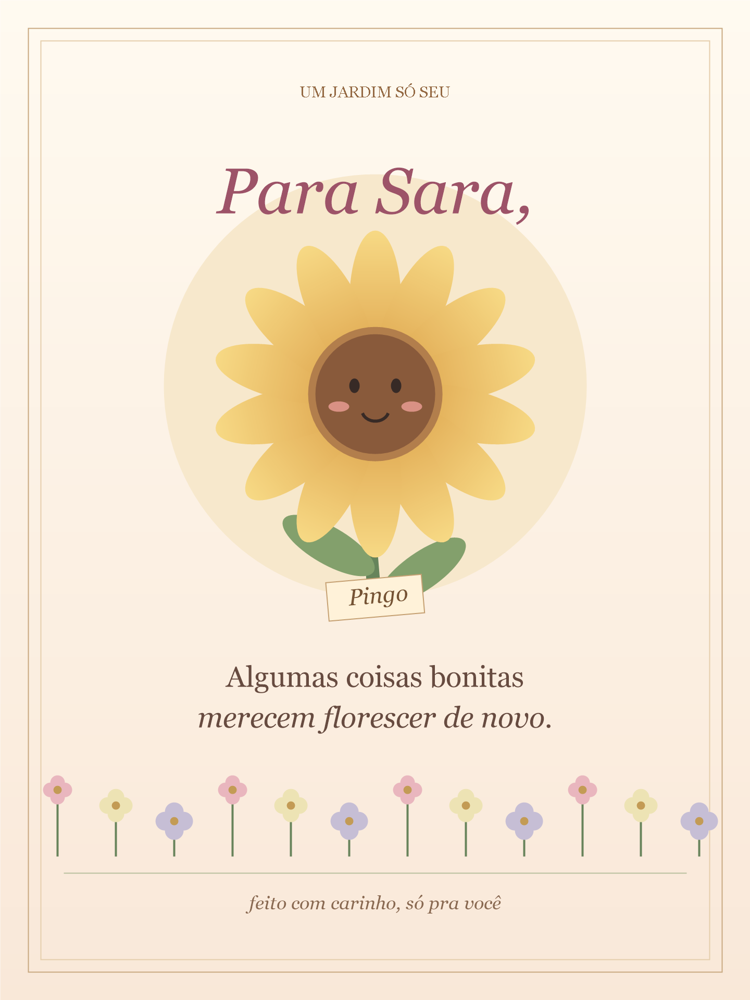

Tem um girassol
que sorri por você.
Um jardim, um pequeno amigo e algumas coisas
que eu queria te dizer. Tudo começa por aqui.

Um pouquinho de sol,
um pouquinho de carinho.
Esse é o Pingo. Ele está meio tímido, mas estava esperando por você.
Sara, esse não é o primeiro girassol dessa história. Uma vez, eu fiz um girassol interativo pra você. Quando pensei em uma surpresa de novo, foi nele que pensei. Esse jardim guarda um pedacinho daquela lembrança. ♡
ler o carinho que ficou aqui ♡
Eu floresci.
Agora é com ele.
Sara, minha parte era florescer. Agora tem uma coisa que ele queria te dizer. Obrigado por cuidar de mim.
Algumas coisas bonitas
merecem florescer de novo.
Eu lembro do primeiro girassol que fiz pra você. Quando pensei em te preparar outra surpresa, voltei pra ele quase sem perceber. Acho que, no fundo, eu queria encontrar um jeito de dizer uma coisa que tenho sentido desde que a gente voltou a conversar: eu estava com saudade de você, Sara.
Saudade de conversar sem ficar querendo que a conversa acabasse. De ter vontade de contar uma coisa boba do meu dia só porque era pra você. De ler uma mensagem sua e sorrir antes mesmo de pensar no que responder. Tem sido bom sentir tudo isso de novo. Bom a ponto de eu querer ser mais sincero sobre o quanto você ainda mexe comigo.
Fazer esse jardim foi gostoso, mas também me deixou pensando no que eu queria de verdade: poder ver seu sorriso de perto, ouvir sua voz, demorar num abraço seu. Estar com você sem precisar encontrar uma desculpa pra isso. Eu sinto falta da sua presença. E tenho vontade de voltar a fazer parte dos seus dias.
Não quero fingir que o tempo não passou, nem que a gente pode simplesmente continuar de onde parou. Mas eu queria te conhecer de novo. Saber quem você se tornou, te contar quem eu sou hoje e descobrir o que ainda existe entre nós quando a gente se permite chegar um pouco mais perto.
Então vou deixar aqui, com um friozinho na barriga, o que esse girassol sozinho não consegue dizer: eu tenho vontade de recomeçar com você. De te chamar pra sair, de olhar nos seus olhos, de criar lembranças novas. De fazer planos pequenos e ficar feliz quando chega o dia de te encontrar.
Não sei se essa vontade também mora aí. Eu gostaria muito de descobrir. Por enquanto, quis que você soubesse da minha, sem precisar adivinhar por trás de uma brincadeira ou de um jardim. Você continua sendo alguém que eu quero por perto, Sara. E eu adoraria ter a chance de te mostrar isso.
eu quero muito te ver. ♡ Com saudade e vontade de nós,
seu engenheiro eletricista.
Confissão: eu fiquei imaginando você abrindo esse jardim… mas a cena que eu mais queria era outra: você na minha frente, e eu finalmente podendo te dar aquele abraço demorado que ficou fazendo falta. ♡
O Pingo pode ir com você.
Uma lembrança desse cantinho, feita só pra Sara.

guardar meu cartão ↓ No celular, você também pode abrir a imagem e mantê-la pressionada para salvar.